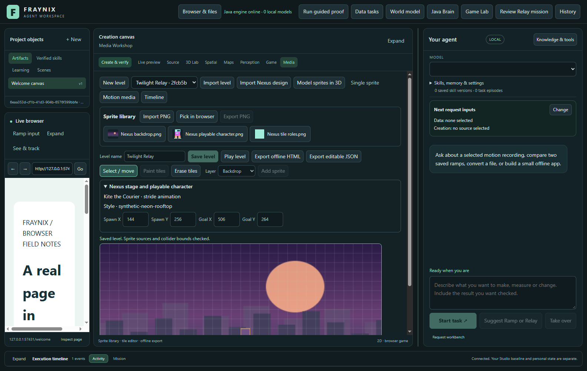
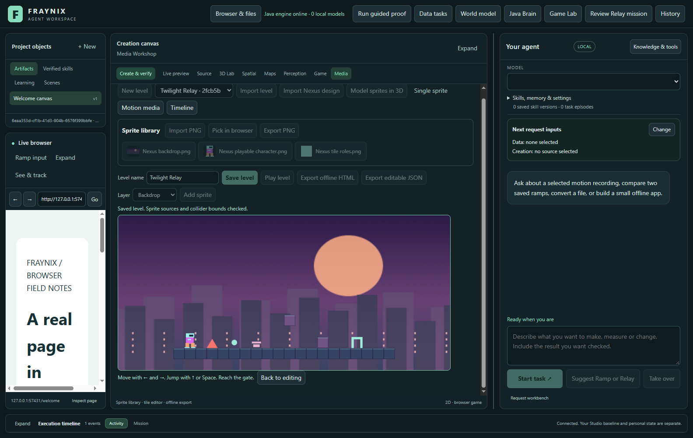
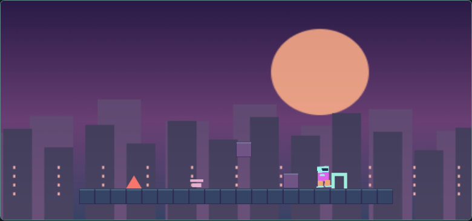

Turn a Nexus design into a playable level
Twilight Relay brings a character, painted backdrop and semantic tile grid into an offline platform level.

Twilight Relay opens as editable tiles with spawn and goal coordinates

The imported hero and backdrop appear in the playable level

The offline export reaches the goal after the pickup and spring
System files
Open source